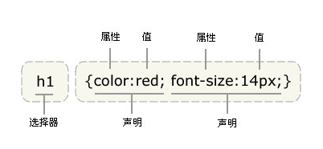

目前推荐遵循的是W3C发布的CSS3.0.
CSS语法：选择符{属性：属性值；属性：属性值；}

选择符表示要定义样式的对象，可以是元素本身，也可以是一类元素或者制定名称的元素.
属性：属性是指定选择符所具有的属性，它是css的核心，css2共有150多个属性
属性值：属性值包括法定属性值及常见的数值加单位，如25px，或颜色值等。
说明：
1）每个CSS样式由两部分组成，即选择符和声明，声明又分为属性和属性值；
2）属性必须放在花括号中，属性与属性值用冒号连接。
3）每条声明用分号结束。
4）当一个属性有多个属性值的时候，属性值与属性值不分先后顺序。
5）在书写样式过程中，空格、换行等操作不影响属性显示。
A、内部样式
语法：
<style type="text/css">
/*css语句*/
</style>
注：使用style标记创建样式时，最好将该标记写在<head></head>;
B、外部样式
*方法一：外部样式表的创建：
<link rel="stylesheet" type="text/css" href="目标文件的路径及文件名全称" />
说明：
使用link元素导入外部样式表时，需将该元素写在文档头部，即<head>与</head>之间。
rel（relation）：用于定义文档关联，表示关联样式表；
type：定义文档类型；
*方法二：外部样式表的导入
<style type="text/css">
@import url(目标文件的路径及文件名全称);
</style>
注：@和import之间没有空格 url和小括号之间也没有空格；必须结尾以分号结束；
C、内联样式 （行间样式，行内样式，嵌入式样式）
语法：<标签 style="属性：属性值;属性:属性值;"></标签>
常用的选择符有十种左右
类型选择符，id选择符，class选择符，通配符，群组选择符
包含选择符，伪类选择符(伪类选择符CSS中已经定义好的选择器,不能随便取名)
1） 元素选择符/类型选择符（element选择器 )
语法：元素名称{属性：属性值；}
说明：n
a)元素选择符就是以文档语言对象类型作为选择符，即使用结构中元素名称作为选择符。例如body、div、p,img,em,strong,span......等。
b)所有的页面元素都可以作为选择符;
用法：
1)如果想改变某个元素得默认样式时，可以使用类型选择符；
（如：改变一个div、p、h1样式）
2) 当统一文档某个元素的显示效果时，可以使用类型选择符
（如：改变文档所有p段落样式）
2) id选择器
语法：#id名{属性：属性值;}
说明：
A）当我们使用id选择符时，应该为每个元素定义一个id属性
如：<div id="div1"></div>
B）id选择符的语法格式是“#”加上自定义的id名
如：#box{width:300px; height:300px;}
C) 起名时要取英文名，不能用关键字：(所有的标记和属性都是关键字)
如：head标记
D）一个id名称只能对应文档中一个具体的元素对象，因为id只能定义页面中某一个唯一的元素对象。
E) 最大的用处：创建网页的外围结构。
3）class选择器
语法：.class名{属性：属性值;}
说明：
A）当我们使用class选择符时，应先为每个元素定义一个类名称
B）class选择符的语法格式是："如：<div class="top"></div>"
用法：class选择符更适合定义一类样式；
4)*通配符
语法：*{属性：属性值；}
说明：通配选择符的写法是“*”，其含义就是所有元素。
用法：常用来重置样式。
5）群组选择器
语法：选择符1，选择符2，选择符3{属性：属性值;}
说明：当有多个选择符应用相同的样式时，可以将选择符用“，”分隔的方式，合并为一组。
6） 包含选择器
语法：选择符1 选择符2{属性：属性值;}
说明：选择符1和选择符2用空格隔开，含义就是选择符1中包含的所有选择符2;
用法：当我的元素存在父级元素的时候，我要改变自己本身的样式，可以不另加选择符，直接用包含选择器的方式解决。
7） 伪类选择器(伪类选择符)
语法 ：
a:link{属性：属性值;}超链接的初始状态;
a:visited{属性：属性值;}超链接被访问后的状态;
a:hover{属性：属性值;}鼠标悬停，即鼠标划过超链接时的状态;
a:active{属性：属性值;}超链接被激活时的状态，即鼠标按下时超链接的状态;
Link--visited--hover--active。
说明：
A）当这4个超链接伪类选择符联合使用时，应注意他们的顺序，正常顺序为：
a:link,a:visited,a:hover,a:active,错误的顺序有时会使超链接的样式失效；
B）为了简化代码，可以把伪类选择符中相同的声明提出来放在a选择符中；
例如：a{color:red;} a:hover{color:green;} 表示超链接的三种状态都相同，只有鼠标划过变颜色。